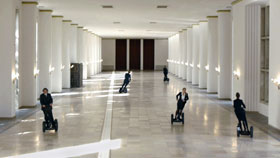

Franz Wanner
 Trafo – Video 2013 – 7 Min.
Konzept, Regie, Schnitt: Franz Wanner – Kamera: Christoph
Harrer
Mit Bernt Engelmann, Katharina
Knaus, Sarah Stoll, Matthias Numberger,
Quirin Empl, F. Wanner – Stimme: Babylonia
Constantinides
Eine Wandelhalle ist ein Trafo, ein Gehäuse, in dem etwas umgewandelt wird: Ein Mangel in ein Potential, eine Kränkung in einen Gewinn. Führen veränderte Formen der Beschäftigung zu neuen Qualitäten der Beschädigung? Wie wird Heilung inszeniert, um digitale Krankheitsbilder zu reflektieren? Welcher Wirkstoff erschließt der Krise neue Kreise?
A pump room is a transformer, a steel-hard shell in which something is converted: a deficit into a potential, an affront into an asset. Do modified forms of activity lead to new qualities of injury? How can healing be staged so as to reflect digital clinical pictures? What agent opens up new circles to the crisis?
Franz Wanner, geb. 1975 in Bad Tölz, Studium Kamera und Schnitt an der BAF, Kunst und Medientheorie an der AdBK München. Unter dem Künstlernamen Franz Wanner erschien 2011 das Buch „Die Anmaßung“. Seit 2012 entsteht der Zyklus „Gift – Gegengift. Krankheitsbilder einer Stadt“.
Ausstellungen (Auswahl): 2014 Toxische Heimat, Stadtmuseum München – 2014 Iodine Submarine, Galerie für Landschaftskunst Tölz – 2014 Gift – Gegengift, basis e.V. Frankfurt – 2013 Gift – Gegengift, Museum für Photographie Braunschweig